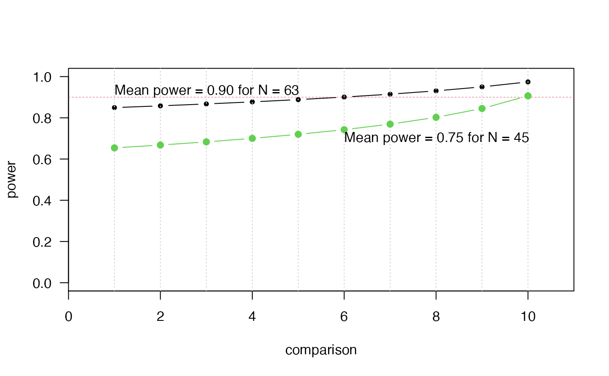

calc_instances.RdCalculates either the number of instances, or the power(s) of the comparisons of multiple algorithms.
calc_instances(ncomparisons, d, ninstances = NULL, power = NULL, sig.level = 0.05, alternative.side = "two.sided", test = "t.test", power.target = "mean")
| ncomparisons | number of comparisons planned |
|---|---|
| d | minimally relevant effect size (MRES, expressed as a standardized effect size, i.e., "deviation from H0" / "standard deviation") |
| ninstances | the number of instances to be used in the experiment. |
| power | target power for the comparisons (see |
| sig.level | desired family-wise significance level (alpha) for the experiment |
| alternative.side | type of alternative hypothesis to be performed ("two.sided" or "one.sided") |
| test | type of test to be used ("t.test", "wilcoxon" or "binomial") |
| power.target | which comparison should have the desired |
a list object containing the following items:
ninstances - number of instances
power - the power of the comparison
d - the effect size
sig.level - significance level
alternative.side - type of alternative hypothesis
test - type of test
The main use of this routine uses the closed formula of the t-test to
calculate the number of instances required for the comparison of pairs of
algorithms, given a desired power and standardized effect size of
interest. Significance levels of each comparison are adjusted using
Holm's step-down correction (the default). The routine also takes into
account whether the desired statistical power refers to the mean power
(the default), median, or worst-case (which is equivalent to
designing the experiment for the more widely-known Bonferroni correction).
See the reference by Campelo and Wanner for details.
If the parameter test is set to either Wilcoxon or Binomial, this
routine approximates the number of instances using the ARE of these tests
in relation to the paired t.test, using the formulas (see reference by
Campelo and Takahashi for details):
$$n.wilcox = n.ttest / 0.86 = 1.163 * n.ttest$$ $$n.binom = n.ttest / 0.637 = 1.570 * n.ttest$$
P. Mathews. Sample size calculations: Practical methods for engineers and scientists. Mathews Malnar and Bailey, 2010.
F. Campelo, F. Takahashi: Sample size estimation for power and accuracy in the experimental comparison of algorithms. Journal of Heuristics 25(2):305-338, 2019.
F. Campelo, E. Wanner: Sample size calculations for the experimental comparison of multiple algorithms on multiple problem instances. Submitted, Journal of Heuristics, 2019.
# Calculate sample size for mean-case power K <- 10 # number of comparisons alpha <- 0.05 # significance level power <- 0.9 # desired power d <- 0.5 # MRES out <- calc_instances(K, d, power = power, sig.level = alpha) # Plot power of each comparison to detect differences of magnitude d plot(1:K, out$power, type = "b", pch = 20, las = 1, ylim = c(0, 1), xlab = "comparison", ylab = "power", xaxs = "i", xlim = c(0, 11))# Check sample size if planning for Wilcoxon tests: calc_instances(K, d, power = power, sig.level = alpha, test = "wilcoxon")$ninstances#> [1] 74# Calculate power profile for predefined sample size N <- 45 out2 <- calc_instances(K, d, ninstances = N, sig.level = alpha) points(1:K, out2$power, type = "b", pch = 19, col = 3)# Sample size for worst-case (Bonferroni) power of 0.8, using Wilcoxon out3 <- calc_instances(K, d, power = 0.9, sig.level = alpha, test = "wilcoxon", power.target = "worst.case") out3$ninstances#> [1] 83# For median power: out4 <- calc_instances(K, d, power = 0.9, sig.level = alpha, test = "wilcoxon", power.target = "median") out4$ninstances#> [1] 76out4$power#> [1] 0.8641640 0.8720871 0.8806398 0.8899412 0.9001496 0.9114838 0.9242583 #> [8] 0.9389522 0.9563477 0.9777831